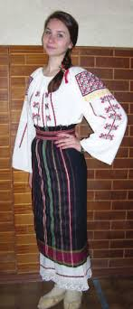
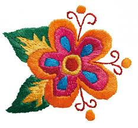

Arta populară de înfrumuseţare a obiectelor textile are o istorie şi tradiţii seculare, fiind prezentă în viaţa moldovenilor din mediul rural şi urban pînă în zilele noastre.Dragostea de frumos se manifestă la ei pretutindeni: în felul de a-şi împodobi locuinţa, modul de a se îmbrăca zilnic şi îndeosebi la sărbători. Dovada de împodobire a vestimentaţiei vine de la strămoşii noştri, găsite fiind unele monumente originale din antichitate
Pe columna lui Traian de la Roma şi monumentul triumfal de la Adamclisi din Dobrogea sînt săpate în piatră imagini ale dacilor în costume identice cu cele ale ţăranilor moldoveni.
Broderia este o modalitate tehnico-decorativă de împodobire a ţesăturilor cu acul şi aţa. Tradiţiile ei sunt de mare vechime în Moldova.Broderia se realizează cu acul, deci este un procedeu tehnico-decorativ de înfrumuseţare a ţesăturilor, a pieselor vestimentare din ţesătură, piele.Multe din acestea se înfrumuseţau prin broderie: Cămaşele femeieşti şi cele bărbăteşti, prosoapele de nuntă.
Crosetarea, cunoscuta din timpuri straveci, s-a dezvoltat pe parcursul secolilor, devinind în zilile noastre una dincele mai îndragite hobi a femeilor ce se ocupa cu lucrumanual..Arta de a croşeta oferă posibilitatea de a utiliza o gamă bogată de îmbinări de laţuri din firul de aţă şi procedee tehnice, care oferă ca rezultat o mare varietate de noi modele a pieselor croşetate...
O origine a acestei indeletniciri nu este cunoscuta cu certitudine ,dar se crede ca tricotatul a aparut chiar in perioada dinainte de Hristos .Tricotatul probabil a fost adus din Orientul Mijlociu catre Europa prin Spania, de catre mauri.Primele obiecte de imbracaminte tricotate se pare ca au fost ciorapii.